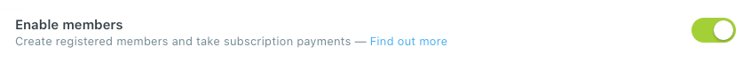
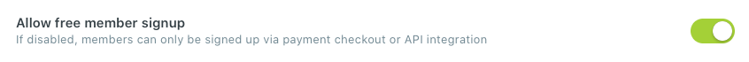

This is where the magic happens! You are able to upload, activate and delete a theme in the Ghost admin of your publication.
Step-by-Step
To upload a theme, go to the Design settings in Ghost admin.
Scroll down to the bottom and click the Upload a theme button.
Once uploaded, click Activate to activate the theme on your site.
Getting Started
Uploading a logo
A publication logo is the primary logo for your brand and is displayed across your theme. You can upload a publication logo from the 'General' settings in the Ghost admin.
Step-by-Step
To upload a logo, go to the General settings in the Ghost admin.
Scroll down until you see an option which says Publication logo.
Click Upload image to upload your logo.
Finally, click Save settings to activate.
Tip: Customize the logo
By default, the logo height is 60px for the header, and 45px for the footer. To change to another value select Code injection settings from the navigation menu on the left of your admin area and paste this code to the Site header:
Change the value of the 60px or 45px parameter to the expected value.
Getting Started
Adding navigation
Adding a navigation menu to your publication can be implemented and edited quickly under the 'Design' settings menu.
Step-by-Step
To add a navigation, go to the Design settings in Ghost admin.
At the top of the page, you will see the Navigation section.
Once here, you can remove any navigation items that you want by using the trash icon to the right of the item. You can add new items by just typing them in. You can change the order by clicking on the icon on the left and dragging it to the spot you want.
Once your items are added, click Save to activate new navigation on your site.
Tip: Adding secondary navigation in the footer
There are two types of navigation, primary and secondary. Primary navigation is used in the theme header, secondary in the footer. Please read the section on Footer navigation for more information.
Services
Formspree
Formspree is a service that hosts forms so that you can gather content from your visitors. Get email notifications of every submission.
Step 1: Editing a file
You’ll need to open the theme’s ../partials/services/formspree.hbs file in your code editor.
You need to change XXXXX – which should be replaced with your email address or Formspree 'id'.
Save your formspree.hbs file in ../partials/services/ folder.
Step 2: Add a contact page
Create a new page and open the Page settings panel using the cog icon in the top right of the screen.
At the bottom of the panel you’ll see a dropdown menu titled Template.
Use the dropdown to select the Contact Formspree template, close the panel.
Click Publish.
Step 3: Activate the contact form
Send a test message from your contact form.
Go to your email client and open the email you received from Formspree.
Finally, click Activate Form to begin receiving submissions from your contact form.
Tip: Adding page to the navigation
If you want this page to appear in the main navigation of your site, just add it to the Navigation list in your site settings.
Services
Getform
Getform is a form backend platform that lets you handle your forms on your websites. You can set up a form and start collecting submissions to your form within minutes.
Step 1: Editing a file
You’ll need to open the theme’s ../partials/services/getform.hbs file in your code editor.
You need to change XXXXX – which should be replaced with your unique form endpoint.
Save your getform.hbs file in ../partials/services/ folder.
Step 2: Add a contact page
Create a new page and open the Page settings panel using the cog icon in the top right of the screen.
At the bottom of the panel you’ll see a dropdown menu titled Template.
Use the dropdown to select the Contact Getform template, close the panel.
Click Publish.
Tip: Adding page to the navigation
If you want this page to appear in the main navigation of your site, just add it to the Navigation list in your site settings.
Services
Google Analytics
Google Analytics is the most widely used platform for analyzing site data in Ghost. Get in-depth site metrics and gain a deeper understanding of your readers with a seamless integration for site-wide tracking.
Step-by-Step
To add Google Analytics, go to the Code injection settings in the Ghost admin.
Google Analytics requires the tracking code to be in the <head> of each page on your site, so paste your code into the Site header section.
Finally, click Save to activate.
Services
Disqus
Disqus is a commenting platform that lets you communicate directly with your readers. The theme integrates with Disqus so you can collect user’s feedback on your articles.
Step-by-Step
You’ll need to open the theme’s ../partials/services/disqus.hbs file in your code editor.
The only thing you need to change is XXXXX – which should be replaced with your own Disqus site-id,for example, your-site.disqus.com – copy only your-site.
Then, uncomment the block – remove the lines which contains {{!-- and --}}.
Save your disqus.hbs file in ../partials/services/ folder.
Members
Enable Members
The members feature in Ghost is suitable for publishers and creators of all types, who need a reliable platform to share content and generate income from a membership business.
Step-by-Step
To activate a members feature, go to the Labs settings. Here you’ll be able to turn members on using the toggle button.

Enable Allow free member signup option.
If you turn the option off, the subscription forms will no longer work. They will work only when sending the Magic login link to the users already in your members base.
The login panel is a navigation component that shows 'Sign in / Sign up' buttons when a member is logged out, and 'Account / Sign out' buttons when a member is logged in.
Tip: Hiding the login panel
By default when members feature is active, login panel is enabled. To disable, just add an internal tag#login-panel-disable in the Post settings menu to one of the published posts.
The tag slug should be hash-login-panel-disable
Tip: Replacing 'Sign up' with 'Membership'
You can easily replace the 'Sign up' name with 'Membership', for this purpose open ../partials/members/login_panel.hbs file in your code editor and find:
<a href="{{@site.url}}/signup/">{{t "Register for free"}}</a>
All translation phrases can be found in the .json files in the ../locales/ folder. Please read the section on Theme translation for more information.
Members
Sign-in and sign-up pages
The sign-in and sign-up pages are allowing your visitors to sign up to your site in order to access members only content.
Step-by-Step
Create a new page and open the Page settings panel using the cog icon in the top right of the screen.
At the bottom of the panel you’ll see a dropdown menu titled Template.
Use the dropdown menu to select Sign In template. Then create another page with the Sign Up template.
Finally, click Publish.
The page URL should be /signin/ and /signup/
Tip: How to add translation?
All translation phrases can be found in the .json files in the ../locales/ folder. Please read the section on Theme translation for more information.
Members
Account page
The account page shows your members the type of account they’re having and gives them some subscription specific data.
Step-by-Step
Create a new page called Account and open the Page settings panel using the cog icon in the top right of the screen.
At the bottom of the panel you’ll see a dropdown menu titled Template.
Use the dropdown menu to select the Account template, close the panel.
There is also a special template called Account Basic which does not display pricing plans. This template is a good choice when you do not offer paid plans and you don’t have posts marked as 'Paid-members only'.
Finally, click Publish.
The page URL should be /account/
Tip: How to add translation?
All translation phrases can be found in the .json files in the ../locales/ folder. Please read the section on Theme translation for more information.
Members
Membership page
The membership page is helping your visitors to quickly visualize and compare the different pricing plans you offer.
Step-by-Step
Create a new page and open the Page settings panel using the cog icon in the top right of the screen.
At the bottom of the panel you’ll see a dropdown menu titled Template.
Use the dropdown menu to select the Membership template, close the panel.
Finally, click Publish.
Tip: How to add feature lists to plans?
Please read the section on Pricing tables for more information.
Tip: How to add translation?
All translation phrases can be found in the .json files in the ../locales/ folder. Please read the section on Theme translation for more information.
Tip: Adding page to the navigation
If you want this page to appear in the main navigation of your site, just add it to the Navigation list in your site settings.
Members
Subscribe page
The subscribe page is allowing your visitors to sign up to your site in order to access members only content and/or receive the premium newsletter. It depend on you how you’re going to use this page.
Step 1: Enable members feature
To activate subscription forms, go to the Labs settings.
Here you need to Enable members using the toggle button.
Enable Allow free member signup option.
If you turn the option off, the subscription forms will no longer work. They will work only when sending the Magic login link to the users already in your members base.
Step 2: Adding subscribe page
Create a new page and open the Page settings panel using the cog icon in the top right of the screen.
At the bottom of the panel you’ll see a dropdown menu titled Template.
Use the dropdown menu to select the Subscribe template, close the panel.
If you want this page to appear in the main navigation of your site, just add it to the Navigation list in your site settings.
Members
Pricing tables
Pricing tables play an important role in helping your visitors to quickly visualize and compare the different pricing plans you offer. Pricing tables can be divided into two categories.
Free plan – for members only
Members only content is only available to view by members who have signed up and logged in using a magic link sent to their email address.
Monthly and Yearly plan – for paid-members only
This access level only allows members of your site who have an active subscription in Stripe to view the content. This means members will not only need to be logged in, but they also need to have selected a plan that you determined and entered credit card details in Stripe. Paid-members will automatically be moved back to non-paying members if their subscription is canceled or lapses.
Tip: Adding feature lists to plans
You’ll need to open the theme’s ../partials/members/plan_free.hbs file in your code editor.
Replace the current <li> ... </li> positions with your own.
Save your plan_free.hbs file in ../partials/members/ folder.
Proceed in the same way with plan_monthly.hbs and plan_yearly.hbs.
Tip: Removing free plan from the membership page
You’ll need to open the theme’s custom-membership.hbs or file in your code editor.
Remove text {{>members/plan_free}}.
Save your custom-membership.hbs file in root folder.
Members
Subscription form
The subscription form is placed at the bottom of the homepage and posts.
Step-by-Step
To activate subscription form at the bottom of the homepage and posts, go to the Labs settings.
Here you need to Enable members using the toggle button.
Enable Allow free member signup option.
If you turn the option off, the subscription forms will no longer work. They will work only when sending the Magic login link to the users already in your members base.
Tip: Hiding the subscription form
Ghost doesn’t support in theme the functionality of checking if the Allow free member signup option is turned off or on yet. If you need to turn the option off you can hide the subscription forms using an internal tag#subscribe-form-disable – just add a tag in Post settings panel to one of the published posts.
The tag slug should be hash-subscribe-form-disable
How subscription forms work in Ghost?
Subscription forms will not work if the members feature is not active or if the Allow free member signup option is turned off – in that case, they will work only when sending the Magic login link to users who already are in your members base.
It’s worth noting that currently all subscription forms are based on the same form – the only difference is the type of emails received by members:
signin form – If a member uses this form they will be sent a sign in email, if they are not already a member they will be sent a sign up email instead.
signup form – If a member uses this form they will be sent a sign up email, if they are already a member they will be sent a sign in email instead.
subscribe form – If a member uses this form they will be sent a subscribe email, if they are already a member they will be sent a sign in email instead.
Activation
Pinned section
Select which posts or pages you want to appear at the top of your site in the pinned section.
Step-by-Step
Open the post you would like to add to the pinned section.
Then, go to the Post/Page settings panel using the cog icon in the top right of the screen.
At the bottom of the panel, you’ll see a checkbox titled Feature this post/page.
Click on the checkbox, close the panel.
The 'Announcements' section is for featured pages and the 'Don't miss it' section for featured posts.
Tip: How to add your own color to 'Announcements' section?
To add your own color, go the Code injection settings in Ghost admin.
Then, paste this code into the Site header section:
This would set an additional /featured/ URL address for all posts that has been marked as featured. This change is required to remove those posts from the main collection.
The most important thing to know when working with .yaml is that it uses indentation to denote structure. That means the only type of nesting which works is 2 spaces. The most common reason for .yaml files not working is when you accidentally use the wrong type or quantity of spacing for indentation.
Tip: How to add translation?
All translation phrases can be found in the .json files in the ../locales/ folder. Please read the section on Theme translation for more information.
Activation
Dark version
The dark version introduces a new look for your site.
Step-by-Step
To activate a dark version of your site, just add an internal tag#dark-version in Post settings panel to one of the published posts (this is a global setting that applies to all pages in your site).
Click Update, to activate.
The tag slug should be hash-dark-version
Tip: Dark version depending on operating system preferences
Modern operating systems (Windows, macOS, iOS, etc.) allow users to choose their preference for light or dark system themes. The below feature is used to detect if the user has requested the system to use a light or dark color theme.
To activate a light/dark version based on user operating system preferences, just add an internal tag#auto-dark-version in Post settings panel to one of the published posts.
Click Update, to activate.
The tag slug should be hash-auto-dark-version
Activation
Social accounts
Enter your Facebook and Twitter account details in the 'General' settings of Ghost admin to enable links to your social profiles.
Step-by-Step
To add Facebook and Twitter account to your publication, go to the General settings in the Ghost admin.
Then scroll down and at the bottom, you’ll see an option which says Social accounts.
Once adding social accounts, click Save settings to activate.
Tip: Adding other social accounts to the footer
Open ../partials/footer_icons.hbs file in your code editor.
Then, uncomment the block – remove the lines which contains {{!-- and --}} for the chosen profile icon.
Now replace the # for each href value with your own profile links.
Save your footer_icons.hbs file in ../partials/ folder.
Activation
Search function
The search function isn’t a built-in function in Ghost. The theme uses the search function on the client-side with the use of the browser.
By default, the search function is added to the theme but requires Content API Key to work properly. When you add a Content API Key, you’ll be able to instantly search posts you type.
Step 1: Generating Content API Key
To generate Content API Key, go to the Integrations settings in Ghost admin.
Click Add custom integration.
Copy your Content API Key and click Save.
Step 2: Adding Content API Key to the theme
You’ll need to open the theme’s ../partials/search_api_key.hbs file in your code editor.
Paste your Contenet API Key between the quotation marks – for example "43dbd0e9b2868ab74a1ca8b372".
Save your search_api_key.hbs file in ../partials/ folder.
About the search function
Search function in Ghost is a complex issue but generally we can divide it into three categories:
Search function on client-side with the use of browser. It’s the most commonly used search function option in the Ghost themes. It requires adding the appropriate script to the theme. The downside of this solution is the low efficiency. It works better with small and medium blogs, up to 100-150 posts. The most known one is GhostHunter. Beside the flaws it’s still the easiest solution for smaller blogs.
Search function on server-side in databases. It’s a solution that the Ghost team is currently working at. More on this subject: GitHub Ghost, Ghost Forum.
Searching function using external services. If your blog is very big (hundreds or thousands of posts) we recommend using the third solution – using an external service. Calculations are conducted on its servers and the results are sent to the blog. Recommended solutions: Agolia, FreeFind, Swiftype.
Activation
Authors page
To present all authors from your publication in an elegant way, you can add a custom authors page.
Step-by-Step
Create a new page and open the Page settings panel using the cog icon in the top right of the screen.
At the bottom of the panel you’ll see a dropdown menu titled Template.
Use the dropdown menu to select the Authors template, close the panel.
Finally, click Publish.
Tip: How to add translation?
All translation phrases can be found in the .json files in the ../locales/ folder. Please read the section on Theme translation for more information.
Tip: Adding page to the navigation
If you want this page to appear in the main navigation of your site, just add it to the Navigation list in your site settings.
Activation
Tags page
To present all tags from your publication in an elegant way, you can add a custom tags page.
Step-by-Step
Create a new page and open the Page settings panel using the cog icon in the top right of the screen.
At the bottom of the panel you’ll see a dropdown menu titled Template.
Use the dropdown menu to select the Tags template, close the panel.
Finally, click Publish.
Tip: How to add translation?
All translation phrases can be found in the .json files in the ../locales/ folder. Please read the section on Theme translation for more information.
Tip: Adding page to the navigation
If you want this page to appear in the main navigation of your site, just add it to the Navigation list in your site settings.
Activation
Contact page
If you wish to have a direct way in which your readers can contact you, you can add a contact page based on Formspree or Getform.
Create a new page and open the Page settings panel using the cog icon in the top right of the screen.
At the bottom of the panel you’ll see a dropdown menu titled Template.
Use the dropdown menu to select the Contact Formspree or Contact Getform template, close the panel.
Finally, click Publish.
Tip: How to add translation?
All translation phrases can be found in the .json files in the ../locales/ folder. Please read the section on Theme translation for more information.
Tip: Adding page to the navigation
If you want this page to appear in the main navigation of your site, just add it to the Navigation list in your site settings.
Activation
Responsive tables
The responsive table will display a horizontal scroll bar if the screen is too small to display the full content. The following description applies to the table added using the markdown card.
By default, the table adapts to the window width. If you have a table that is too wide, you can add a container <div class="responsive-table"> element with around the table, and it will display a horizontal scroll bar when needed.
Step-by-Step
To add a responsive table, use the Markdown card.
Add a container <div class="responsive-table"> element with around the table (in markdown there always needs to be a blank line between any HTML and markdown).
Markdown table syntax is quite simple. It does not allow row or cell spanning as well as putting multi-line text in a cell. The first row is always the header followed by an extra line with dashes - and optional colons : for forcing column alignment.
The dropdown menu is used inside the primary navigation to display a list of related links when a user click on the 'dots' element.
Tip: How to change the number of items before 'dots' element?
You’ll need to open the theme’s ../partials/navigation.hbs file in your code editor.
At the top, you will see the Header navigation section.
Replace the current to="3" and from="4" value with your own, for example to="4" and from="5".
Save your navigation.hbs file in ../partials/ folder.
Customization
Colors of details
We have added an easy way to change the color of details on your site. You can choose a color from the color palette or add your own.
Step-by-Step
To change the color of details of your site, just add an adequate internal tag in Post settings panel to one of the published posts (this is a global setting that applies to all pages in your site).
Change the -yourcolor name to your own color name.
Change the value of the #fff parameter to your own color.
Click Save.
Go to the Post settings panel and add an internal tag#post-card-custom-yourcolor to the published post.
Click Update, to activate.
The tag slug should be hash-post-card-custom-yourcolor
Tip: How to add one color for all post-cards?
To add one color for all post-cards, go the Code injection settings in Ghost admin.
Then, paste this code into the Site header section:
<style>
:root body {
--bg-color-all: #fff
}
</style>
Change the value of the #fff parameter to your own color.
Click Save.
Go to the Post settings panel and add an internal tag#post-card-one-color to one of the published posts.
Click Update, to activate.
The tag slug should be hash-post-card-one-color
Customization
Colors of background
We have added an easy way to add the color of background on your site. You can choose a color from the color palette or add your own.
Step-by-Step
To add the color of background of your site, just add an adequate internal tag in Post settings panel to the published post (this is a global setting that applies to all pages in your site).
Change the value of the #333 parameter to your own color.
Click Save.
Go to the Post settings panel and add an internal tag#site-custom-light-color or #site-custom-dark-color to one of the published posts.
Click Update, to activate.
The tag slug should be hash-site-custom-light-color or hash-site-custom-dark-color
Customization
Logo height
Follow below steps to change the size of the logo on your site by adding simple CSS code.
Step-by-Step
By default, the logo height is 60px for the header and 45px for the footer, to change to another value, go to the Code injection settings in Ghost admin.
Change the value of the 60px or 45px parameter to the expected value.
Finally, click Save to activate.
Customization
Posts per page
By default, the homepage, author’s and tag’s page display a maximum of 5 posts per page, but you are able to change this number.
Step-by-Step
You’ll need to open the theme’s package.json file in your code editor and find:
"config": {
"posts_per_page": 5
}
Change the value of the 5 to the expected value.
Save your package.json file in root folder.
Customization
Theme translation
The theme is fully translatable by enabling a publication language in the settings of the Ghost admin. Before that, you must prepare your language file.
Step-by-Step
Inside the ../locales/ folder, add target language files for each translatable language used on your site. For example es.json for Spanish and pl.json for Polish. A valid language code must be used.
Translate the sentences used in theme inside your new language files, for example, in en.json:
At the top of the page, you’ll see the Publication info section.
Enter the correct language code into your Publication language settings menu.
Finally, click Save settings to activate.
Tip: Reactivate the translation file
If you edited the active language, you have to restart Ghost to make the changes effective. Alternatively, enter another language code and click Save settings to activate, then switch back to your language code.
Optimization
CSS compression
When you minify your website’s CSS you can shave some valuable time off of your site’s page load speed.
Step-by-Step
Go to www.minifier.org and paste the CSS code or link to CSS file e.g. https://yoursite.com/assets/css/screen.css into the input box and click the Minify button.
After the new minified code is generated, copy the code.
Then go back to the CSS file of your theme and replace the code with the new minified version.
Social accounts
Enter your Facebook and Twitter account details in the 'General' settings of Ghost admin to enable links to your social profiles.
Step-by-Step
Tip: Adding other social accounts to the footer
../partials/footer_icons.hbsfile in your code editor.{{!--and--}}for the chosen profile icon.#for eachhrefvalue with your own profile links.footer_icons.hbsfile in../partials/folder.